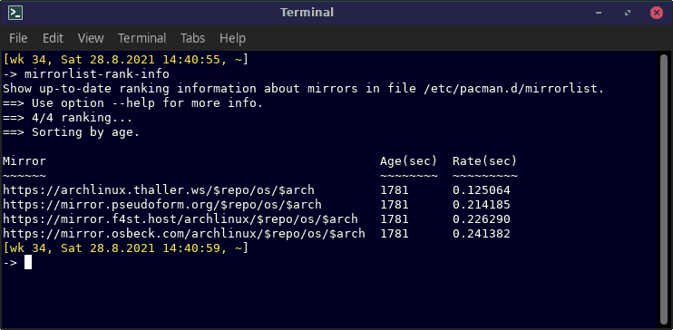

mirrorlist-rank-info shows up-to-date ranking
information about the mirrors in file
/etc/pacman.d/mirrorlist.

mirrorlist-rank-info [options] --age Sorting precedence: 'age' over 'rate'
--rate Sorting precedence: 'rate' over 'age'
--help
-h Show this help